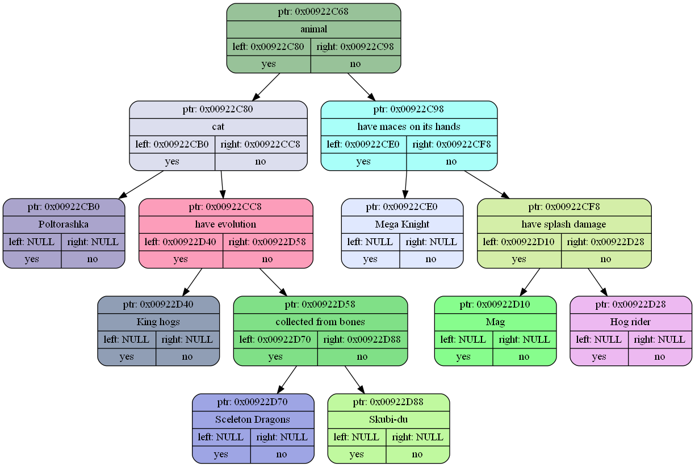

from main #1
TreeDump called from main.cpp, function: main, line 31, list name: tree
( "animal" ( "cat" ( "Poltorashka" null null ) ( "have evolution" ( "King hogs" null null ) ( "collected from bones" ( "Sceleton Dragons" null null ) ( "Skubi-du" null null ) ) ) ) ( "have maces on its hands" ( "Mega Knight" null null ) ( "have splash damage" ( "Mag" null null ) ( "Hog rider" null null ) ) ) )

Dump after verification
TreeDump called from tree.cpp, function: Akinator, line 153, list name: tree
( "animal" ( "cat" ( "Poltorashka" null null ) ( "have evolution" ( "King hogs" null null ) ( "collected from bones" ( "Sceleton Dragons" null null ) ( "Skubi-du" null null ) ) ) ) ( "have maces on its hands" ( "Mega Knight" null null ) ( "have splash damage" ( "Mag" null null ) ( "Hog rider" null null ) ) ) )